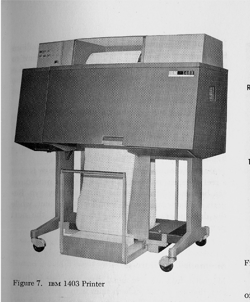

Or, how I learned to stop worrying and love the command line
Background
At a high level, computers do four things:
run programs
store data
communicate with each other, and
interact with us
They can do the last of these in many different ways, including direct brain-computer interfaces and speech recognition, using systems such as Alexa or Google Home. While such hardware interfaces are becoming more commonplace, most interaction is still done using screens, mice, touchpads and keyboards.
Although most modern desktop operating systems communicate with their human users by means of windows, icons and pointers, these software technologies didn’t become widespread until the 1980s. The roots of such graphical user interfaces go back to Doug Engelbart’s work in the 1960s, which you can see in what has been called “The Mother of All Demos”.
The Command-Line Interface
Going back even further, the only way to interact with early computers was to rewire them. But in between, from the 1950s to the 1980s, most people used line printers. These devices only allowed input and output of the letters, numbers, and punctuation found on a standard keyboard, so programming languages and software interfaces had to be designed around that constraint.
This kind of interface is called a command-line interface, or CLI, to distinguish it from a graphical user interface, or GUI, which most people now use.
Original Command Line Interface: Marcin Wichary
Apple II with Basic

Line Printer
Computer with Terminal
The heart of a CLI is a read-evaluate-print loop, or REPL: when the user types a command and then presses the Enter (or Return; for Carriage Return) key, the computer reads it, executes it, and prints its output. The user then types another command, and so on until the user logs off.
Read Evaluate Print: REPL
The Shell
This description makes it sound as though the user sends commands directly to the computer, and the computer sends output directly to the user. In fact, there is usually a program in between called a command shell. What the user types goes into the shell, which then figures out what commands to run and orders the computer to execute them. (Note that the shell is called “the shell” because it encloses the operating system in order to hide some of its complexity and make it simpler to interact with.)
REPL with Command Shell and Kernel
Bash
A shell is a program like any other. What’s special about it is that its job is to run other programs rather than to do calculations itself. The most popular Unix/Linux shell is Bash, the Bourne Again SHell (so-called because it’s derived from a shell written by Stephen Bourne). Bash is the default shell on most modern implementations of Unix and in most packages that provide Unix-like tools for Windows.
Bash Shell and Kernel
A Brief History of Unix
Developed at AT&T Bell Labs by Ken Thompson and Dennis Ritchie in the mid-60’s
Became popular in academia in the 70’s and 80’s
Was heavily commercialized in the 80’s
As a reaction, Richard Stallman developed GNU (Gnu’s not Unix)
Linus Torvalds also developed an open-source version - Linux
Mac OSX is built entirely on top of a unix system (so commercialized again)
they recently replaced bash with zsh {shrug}
Characterized by:
hierarchical file system
use of plain text for storing data and commands
large number of simple programs that can be strung together
“the power of a system comes from the relationships among programs rather than the programs themselves” Kernigan and Pike 1984
Heirarchical File System
Example File System
Paths: Absolute vs. Relative
Absolute Path
specifies the location of a file or directory from the root directory(/)
“208 Mueller Lab, University Park, PA 16802”
/Users/edc5240
Relative Path
path related to the present working directory(pwd).
“Take a left on Atherton, take it through downtown State College and past the bus station, right on Curtin, keep left, just past the library, take a right into the parking circle, you’ll see a loading dock. Park there.
../../usr/lib
Using Bash
Using Bash or any other shell sometimes feels more like programming than like using a mouse:
Commands are terse (often only a couple of characters long),
their names are frequently cryptic
syntax is not simple or even consistent (but neither is English…)
their output is lines of text rather than something visual like a graph.
with great power comes great responsibility
However, Bash is more akin to using an operating system like Windows or MacOS than using a computer language.
On the other hand…
… with only a few keystrokes, the Bash shell acts as:
Glue: combine existing tools into powerful pipelines
Automator: handle large volumes of data automatically, thereby making our work reproducible
You generally can’t automate actions in Windows or MacOS (of course there are recordable macros but they are unwieldy).
With a shell, once you figure out how to do something, you can set it up and let it run over and over again
Archive: Records the commands you type so you can inspect and repeat them later.
much more reproducible
an electronic lab notebook
Communicator: easily interact with remote servers
It is worth your time to learn it!
As we move more and more into cloud computing for scientific analysis of “big data”, we are actually moving away from GUI and back toward CLI!
“Unix is user-friendly. It’s just very selective about who its friends are.”
Environments and Environmental Variables
Environmental Variables
So we’ve visualized the shell as commands that communicate with the cpu through the kernel. But, what actually happens when you type a command, like ls into your terminal? How does the computer know what to do with it?
Whenever you type a command, your computer searches a set of directories to find an executable program that matches that name.
This set of directories is called your $PATH. The $ indicates that this is a shell variable. You might have encountered it if you ever wrote a for loop in bash for example.
So $PATH is an environmental variable that is actually a list of paths.
As far as I know, most bash programs live in /bin and /usr/bin
User installed programs traditionally (as far as I know) have lived in /usr/local/bin
Nowadays I am seeing package managers use the /opt directory to install things
If you have installed something into a directory that isn’t on the $PATH, then you have two options:
add it to the $PATH.
You can either manually edit the .bashrc or .bash_profile
Or (safer, but temporary) export PATH=$PATH:/new/dir/path/
OR (even safer) you can just call it from that directory whenever you need it
/new/dir/path/mycoolprogram
Also, you can find the location of any command by typing which nameOfCommand
Your Environment
So your bash “environment” can be thought of as all of the programs that you can call from the command line, plus all of the environmental variables. Also, remember that you have an environment in a programming language as well. The “environment” tab in R will show you all of the data objects and function that can be called.
$PATH is just one of many environmental variables, which you can use to customize your bash experience. Clearly $PATH is the most important one, because it helps define the group of commands that you have at your disposal. You can get a readout of your bash environment with the env command.Here is the environment on my laptop:
While it might be possible to have a GUI interface to a computational server, it would kind of defeat the point. A computational server is for computing. Not no email and word processing.
There’s really only three extra commands you need to know to use a computational server.
Login to Remote Server
ssh for “secure shell” allows one to login to the server
after you login, remember you are in a new shell with a new environment and different programs.
Copy Files to/from Remote Server
scp for “secure copy” allows one to copy files to and from the server. It uses the same syntax as cp: the first argument is the path to the file or directory that needs copying. The second argument is the path to the destination. Remember to use the -r flag for directories!
#| eval: false# copy a directory upscp-r ~/data/OrbicellaGenome edc5240@argonaute.science.psu.edu:./data/OrbicellaGenomepassword: YOURPSUPASSWORD# copy a file downscp edc5240@argonaute.science.psu.edu:./data/Ofav_Varadero.1.fastq ~/data/OrbicellaData/Ofav_Varadero.1.fastqpassword: YOURPSUPASSWORD
Shortening your login
Feeling bold? You could edit your ssh config file (only do this after your first ssh login)
#| eval: falsenano ~/.ssh/config# paste this in and saveHost argoHostName argonaute.science.psu.eduUser edc5240Host nautHostName nautilus.psu.eduUser ecrandallHost montHostName montastraea.psu.eduUser ecrandall
Thereafter, if you type ssh argo it will autofill the rest of the information.
Setting up Terminal Multiplexers
Gah, more nerdy terms. Basically, when you ssh into a server, any processes that you start there will stop as soon as you logout. You therefore need to start a terminal that isn’t going to die when you logout. You do this with a terminal multiplexer.
I have always used screen as my terminal multiplexer, but I understand that tmux is the latest thing. Here is a guide to tmux that I just read.
#| eval: false# start a new, named tmux terminaltmux new -s myterminal
Once you do this, you are in the new terminal. You can start whatever jobs you want to leave the terminal with processes still running (detach from the terminal), press Cntl-b and then press d (for detach). To “kill” the terminal and end any processes within, press Cntl-b and then press x.
If you come back after awhile and want to re-attach to your terminal:
#| eval: false# start a new, named tmux terminaltmux attach-session -t myterminal
Installing Software
Interpreted Languages
R and Python are interpreted languages. That means can be executed directly from a command line interface, which interprets each command via a virtual machine into machine code. The languages are generally more “user-friendly” and allow mere mortals like biologists to write scripts and get things done. However, interpreted languages are relatively slow compared to compiled languages (but they’ve always been fast enough for my purposes!)
From geeksforgeeks.org
Compiled Languages
Compiled languages cannot be run directly from a command line. They must first be translated into machine code via a compiler. This, and their syntax, makes them fairly unfriendly for non-programmers. However, since their code is “closer” to machine code, they run much more efficiently. Compiled languages include C, C++, FORTRAN, COBOL, LISP.
From geeksforgeeks.org
Dependencies
All software (both compiled and interpreted) is built using other software. If I write code to built an interface for GEODE, I’m not going to write a function that will calculate a Hardy-Weinberg test, and \(F_{is}\) and \(F_{st}\), etc.. I am going to use a function that is included in the snpR package for R. So my code will have snpR as a dependency. Similarly, snpR has many dependencies, including dplyr, purrr and ggplot2. And each of those packages have dependencies. Some R packages are built on compiled C++ programs (which run faster), and to install those, you will need to have a C++ compiler like clang
It is becoming pretty rare, but one day you may have to compile a piece of software. Compilation is a complex process as each program likely has numerous dependencies. There is a common set of steps, but specific instructions can vary, so after you download the software, make sure to carefully read any readme files, and install dependencies beforehand. After downloading the source code with curl or wget, the basic steps are:
./configure: this command checks your environment to ensure all dependencies are in place, and builds something called a Makefile, .
make: this runs the Makefile, which is a set of instructions to pull all of the pieces from the dependencies into a single executable program.
sudo make install: all this does is copy the program into a directory that is on your $PATH. However, because those directories are generally write-protected, you need sudo privileges to do so.
Every time scientific software is update with bug fixes etc. it will need to be re-installed and if it is compiled language, it will need to be re-compiled!
Compiler workflow by Pronesto
Package Managers
All this compiling and re-compiling and keeping track of dependencies is exhausting. Fortunately, the nerds find it exhausting too, so they have created package managers! Everyone is familiar with package managers as the “App Stores” you find on your phone or computer. Package managers are programs themselves, that store little sets of instructions for how to compile a wide range of software. They monitor each piece of software for updates, and then can automatically update everything when you command it. All operating systems and programming languages have their own package managers:
MacOS: Officially, the App Store, but unofficially homebrew is the “missing package manager” that builds Linux programs.
Windoze: Windows Package Manager (or winget)
Ubuntu Linux (what our servers use): apt
Python: pip or conda or mamba
R: install.packages() and the Packages tab in R-Studio is a GUI package manager.
Using Package Managers
Most package managers work pretty similarly. You call the program, then a set of commands within the program. We will use mamba as our main package manager. Please let Raúl and I handle installs for now.
#| eval: falsemamba search myprogrammamba install myprogrammamba upgrade myprogrammamba uninstall myprogrammamba info myprogrammamba update #check for updates to all packagesmamba list # see a list of installed packagesmamba --help
So easy!
Conda and Docker Environments
As software keeps getting built on top of other software, on top of other software, on top of other software, the environment of each user’s computer or computational server keeps getting more difficult to “solve”. Thus, docker was created as a way to create a virtual environment or “container” with all of the necessary dependencies for one particular job. Programmers love docker, but I have never used it.
Even more recently, the conda package manager for Anaconda, which is a big version of python (clearly these programmers are not bionerds) has also migrated into contained, virtual environments. The qiime2 package only works inside a specific conda environment, in fact, and more scientific programs seem to be moving in this direction.
Cassiopea Model: Synology DS1621+
RAM: 4 GB
Cores: 4
ROM: 72 Tb Total (RAID5 to ~50 Tb)
To mount the shared drive: Mac:
- Open Finder and click Go in the top menu bar, then Connect to server.
- Enter the following address and then authenticate with Penn State credentials:
smb://cassiopea.science.psu.edu/MedinaLab
smb://e1-055554.science.psu.edu/MedinaLab
Windows: - Open a file explorer window and go to This PC.
- In the top menu, select Computer then Map a network Drive
- Enter this address and authenticate with Penn State credentials:
\cassiopea.science.psu.edu \e1-055554.science.psu.edu
Workload Managers
To manage all of these computing resources, it is helpful to have a workload manager. Workload managers create a queue of jobs, with each job getting resources according to a priority system (usually order of submission, but could be otherwise). There are two workload managers we are currently looking at:
SLURM: Simple Linux Utility for Resource Management
openPBS: open-source version of PBS: Portable Batch System
Both use a basic set of commands to submit jobs to a queue. Jobs need to be written as a basic bash script.